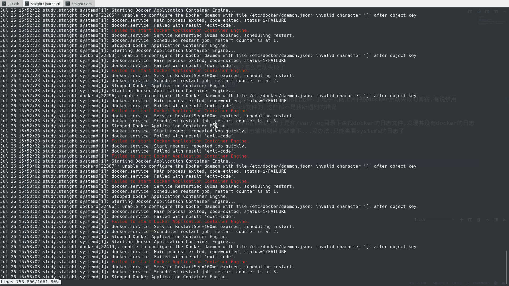
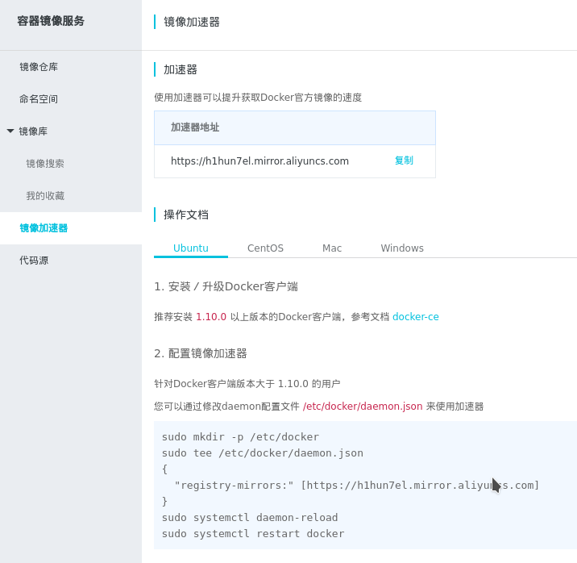

今天下午我一如往常的启动docker…然后,嗯?怎么启动失败了

以前从来没有出现过这种情况啊,我第一反应是尝试多次重启,然而依旧无果.于是乎去网上各种搜docker启动失败的博客,有说禁用selinux的,有说删除/var/run/docker.sock文件的,这些都不是我所遇到的错误
直接使用systemctl status docker命令得不出什么信息,于是在/var/log目录下查找docker的日志文件,发现并没有docker的日志.在网上查找相关资料,dockerd程序默认直接将日志输出到当前终端下…没办法,只能查看systemd的日志了
]# journalctl -u docker
哇,报出好多错误信息.不过仔细一看都是重复的,重要的是dockerd前缀的错误信息,看来是/etc/docker/daemon.json的原因…
我记得这个文件是用来配置加速器的,应该不会出什么问题的呀.不管怎么说,那么先看看该文件喽
]# cat /etc/docker/daemon.json
{
"registry-mirrors:" [https://h1hun7el.mirror.aliyuncs.com]
}格式好像有哪里不对劲?正常的json格式难道不应该是”A”:[“B”]这样子的么
修改了此文件,发现docker终于能正常启动了.不过我不会随意地改这个文件的啊,想起不久似乎在阿里云官网更新过这个文件,那么我再在官网看看

哇这配置,找到罪魁祸首了,话说阿里云官网难道也会犯这种低级错误的么-.-
后记
其实除了该错误以外,注意到journalctl命令还报了另外信息
Jul 26 15:52:23 study.staight systemd[1]: docker.service: Service RestartSec=100ms expired, scheduling restart.
Jul 26 15:52:23 study.staight systemd[1]: docker.service: Scheduled restart job, restart counter is at 3.
Jul 26 15:52:23 study.staight systemd[1]: Stopped Docker Application Container Engine.
Jul 26 15:52:23 study.staight systemd[1]: docker.service: Start request repeated too quickly.我第一次知道原来systemd还会为守护进程进行失败重启.这是个好东西呀,不过这个100ms的重启间隔…
我们可以在docker的systemd配置文件中修改它
]# cat /usr/lib/systemd/system/docker.service
...
[Service]
Restart=on-failure
RestartSec=60s
...这里Restart字段定义了服务退出时的重启方式,值值默认是no,设置为on-failure表示当非正常退出时重启
RestartSec字段定义了重启服务之间需要等待的秒数,值默认为100ms